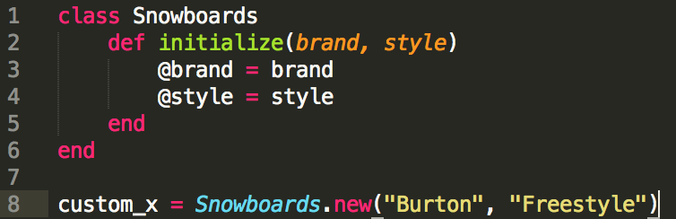

Week 5 Technical Blog
A class in ruby, or classes are an object oriented programming language, which allow for the users to influence elements known as objects. Therefore every object becomes an object requiring defined methods for which the object properly responds to. When creating a class one wants to always think about what objects will be create from said class. Keep in mind the elements the object is aware of and tasks it will be able to accomplish. When I say know what the object is aware of I mean to say think of the instance variables in relation to the object. So for an example if you create a class called snowboards it should look a little something like this (look below):
So you set the class snowboards and then define it with the parameters of brand and style represented by the instance variables @brand and @style. Line 8 is then exemplifying defining an instance of the class you could add more if wanted by for the sake of not getting to into snowboarding and getting off track I think you get the jist of it. One last thing to keep in mind when working with classes is that context available to the content is the Scope. So with classes there are four types of variables; local, global, class, and instance. Global variables are available all through out the code while the local variables are only accessible through specific defined methods. I guess you can guess what class variables are then right? Well if not understood by the name class variables are only designated towards a certain class and then instance variables, well we just learned a little about those. These are all important things to keep on your mind when creating a class in Ruby, thanks for reading.
Check out some of my work.
SWEBBY